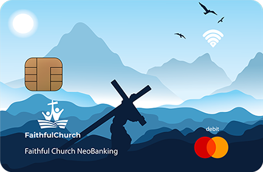

Room to explore.
The desktop portal brings My Church, My Leadership, Wallet & IMPACT, Connect, and Reflect together. Open each guide, look around, and share as much or as little as you choose.
Open desktop portal in a new tabFaithful Church · An interactive member experience
Meet Maya and follow her week with GRACE, from Sunday service to time with friends and volunteering. Then try the portal yourself.
Watch her weekSee the experience in everyday life.
Explore it yourselfChoose desktop or mobile.
Share a little about yourselfTry the optional workshop as you go.
Join Maya at church, over coffee, shopping for groceries, and helping at the food bank. See how GRACE connects these moments throughout her week.
Watch on YouTube if the player is unavailable.
The film illustrates the member experience. The interactive demos below use sample people, activity, and financial examples.
Explore on your computer or phone. Both versions include interactive pages and the optional workshop.
The desktop portal brings My Church, My Leadership, Wallet & IMPACT, Connect, and Reflect together. Open each guide, look around, and share as much or as little as you choose.
Open desktop portal in a new tabFind leaders, groups, reflections, and the IMPACT card in the mobile demo. It opens in your phone’s browser, with no app to install.
Open mobile experience in a new tabNo account is needed to explore the demos. You can try a few guided exchanges with GRACE. Signup is simulated and does not create a live account.

The IMPACT concept links eligible everyday purchases to support for your church. Choose familiar stores and a cause you care about to see an example.
Use the workshop sliders to estimate your spending on groceries, fuel, and other categories. See the potential support for your chosen cause, using sample rates.
Illustrative only. No real card is issued and no money moves. Any future application, identity checks, eligibility, and approval are separate from church participation.
Try the mobile experience here, then scan the code with your phone’s camera to open the published demo. No download needed.
Explore Maya’s church, card, connections, and reflections on your own screen.
The QR code opens the mobile demo; it does not pair devices or transfer your answers. Cross-device syncing is not available yet. The preview uses local changes, while your phone opens the published version.
The workshop is built into the desktop and mobile versions. Open a page guide, then use “Let us know” to answer a few questions. You can skip any section.
Share some of your story here.
Church connections
Interests and next steps
Illustration of the guide. Use the portal to answer.
Open the page guide to understand what’s available. Maya’s sample profile shows how a member might use the portal.
Use the choices, checkboxes, spending sliders, and optional notes. Open or close a section, or choose “Skip this part.”
On desktop, Mobile shows “Your story so far.” “Make it yours” opens the simulated signup, where you can add or change answers before viewing your own demo profile.
Visitor answers stay separate from Maya’s sample story. This is a demo, not live registration or church membership. Answers do not transfer between your computer and phone yet. Keep private care, identity, and financial details out of the workshop.
See what Maya uses. Try what interests you.
Choose your experience